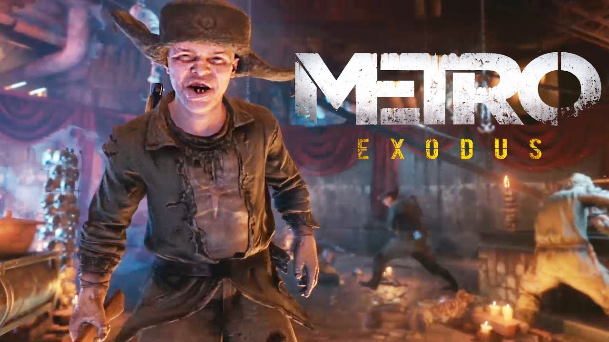

Сюжет
Февраль 2035 года. После битвы за Д-6 Артём ушёл из Ордена и женился на Анне, а её отец, полковник Мельник, передвигающийся при помощи протезов, сконструированных Андреем «Мастером», продолжает восстанавливать боевую силу Ордена. Артём всё чаще вспоминает момент, когда он стоял на вершине Останкинской телебашни и, направляя ракеты на логово Чёрных, слышал по радио позывные. Артём предполагает, что сигнал доносился не из Москвы, и что за пределами сгинувшей столицы России выжили люди. Главный герой совершает множество вылазок на поверхность в надежде поймать сигнал вне города, однако с каждым разом из его радиопередатчика доносятся одни лишь помехи. Артём не оставляет попыток связаться с выжившими за пределами столицы. Анна и Мельник, абсолютно уверенные в том, что кроме жителей московского метро на планете больше никто не выжил, относятся к его затее с презрением.
Москва
Во время очередной вылазки на поверхность Артём натыкается на большую стаю стражей и, отбиваясь от них, получает тяжёлые ранения. От стражей Артёма спасают бойцы отряда Спарты (Князь, Дамир, Алёша, Идиот) и доставляют на ВДНХ, где в лазарете переливают кровь протагонисту. Артём приходит в себя и видит Анну. Анна уговаривает мужа прекратить совершать безрезультатные вылазки на поверхность потому что искренне любит его и не хочет, чтобы он так глупо умер от радиации, параллельно сообщая о планах переноса места жительства в Полис. Артём встречается с Мельником и полковник настаивает на словах Анны и на том, что за пределами московского метро нет никаких признаков жизни, а авантюрные походы Артёма к высоткам города отрицательно сказываются на его здоровье как из-за атак со стороны мутантов и головорезов, так и высокой радиации. Кроме того, полковник готов принять Артёма обратно в Орден. Чуть позже Артём видит лечащего врача. Врач говорит ему, что его вытащили с того света и что в следующий раз, скорее всего, вытащить его не удастся, а так же о том, что люди отдают свою кровь Артёму, а в ней могут нуждаться и другие раненые. Артём выходит из лазарета и встречает своих спасителей — Степана, Токарева и Сэма. Они приветствуют главного героя в дружеской обстановке. Их командир, полковник Мельник, приказывает отряду спартанцев ожидать дальнейших распоряжений.
Зима
Отдалившись от столицы, группа убеждается в том, что здешний радиационный фон находится в пределах нормы и теперь можно свободно дышать на поверхности без противогаза, однако всем верится в это с трудом. Группа переговаривается друг с другом о дальнейших планах и о возможном возвращении в Москву. Полковник отговаривает группу, объясняя, что все они натворили уже столько дел, чтобы никогда не вернуться туда, где их несомненно ждёт смертная казнь за предательство. По приказу Мельника Артём через радиоприёмник ловит сигнал по позывному «Ковчег» из бункера в Ямантау и голос диктора сообщает координаты местонахождения бункера. Полковник объясняет всем, что единственный шанс на прощение — связаться и договориться с уцелевшим правительством, которое находится на Урале в бункере у горы Ямантау (проект «Ковчег»). Группа даёт паровозу имя «Аврора» («в честь богини утренней зари и крейсера») и начинает свой нелёгкий путь к Ямантау.
Волга
Март 2035 года. Паровоз беглецов подъезжает к мосту через реку Волга. Анна беседует с Артёмом, как вдруг на железнодорожных путях замечает впереди людей. Они открывают огонь по «Авроре» и уходят. Паровоз, не успев затормозить, крушит установленную на на путях баррикаду, из-за чего ломается и останавливается. Мельник предполагает, что это были иностранные оккупанты, хотя Степан говорит, что они были без формы, в ватниках. Из-за поломки паровоза полковник отправляет на разведку Артёма и Анну в замеченную группой церковь, приказав остальным бойцам занять оборонительные позиции. Токарев даёт протагонисту рюкзак для сбора пригодных в использовании материалов — по сути, походную мастерскую, позволяющую вытачивать патроны, создавать аптечки и проч.
Раздел с мемами 



TRIPLE K I TRYAPKA